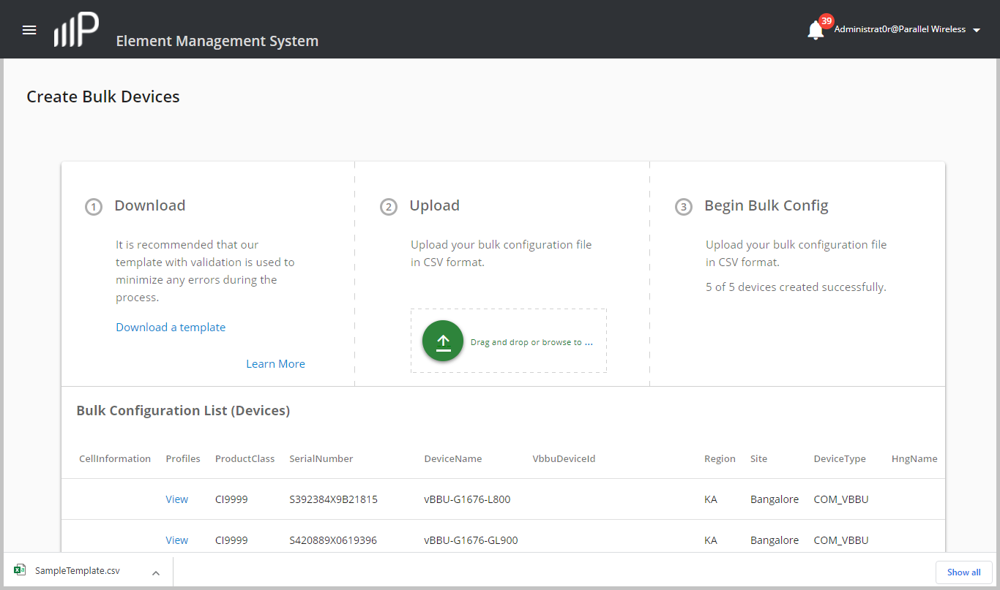
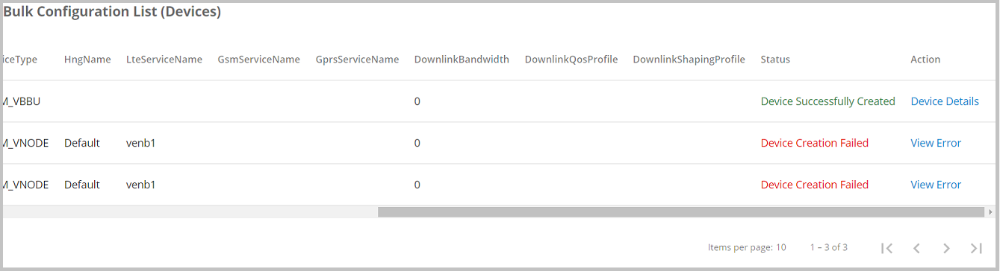

Use this task to create a custom CSV file from a CSV file template provided by
Parallel Wireless and upload it to configure multiple devices or create multiple devices at
the same time.
The custom CSV file must be created and configured with device information and
values. Refer to the SampleTemplate CSV File Guide appendix for more
information about the column parameters in the CSV template file.
-
From the navigation bar, select Devices > Create Bulk Devices.
The Create Bulk Device window displays, as shown below:

-
In the Create Bulk Devices window, click Download a template in
the Download section to download the SampleTemplate.csv file to your Web
browser's default download directory.
-
Open the SampleTemplate.csv and save it as a file with your preferred name on
your local system.
-
Click Learn More. The Learn more about CSV Template dialog box
displays with information about how to use this template. Also refer to the
CSV File Template Guide Appendix in this guide, for more
detailed information than is provided in this dialog box.
-
Once you are finished specifying your custom CSV file by using the template,
upload it to the PW EMS by dragging and dropping it in the Upload section
box, as shown below. Alternatively, click the green-arrow icon. In the
Open dialog box, navigate to a local system directory where this file
is located and click the Open button to upload the file to the PW
EMS.
NOTE: Ensure that the custom CSV file that you upload is in .csv format. If the
file is in any other format, the file fails to upload. Only one .csv file
can be updated at the same time. If there is an application session timeout
or the Web browser is refreshed while uploading the CSV file, the CSV file
must be uploaded again.
The <custom_filename>.csv file is uploaded to the PW
EMS.
-
If your CSV file uploads and validates successfully, click BEGIN BULK
CONFIG to start the bulk configuration of devices. The following example
shows a validated CSV file that is ready to be used for the bulk configuration
of devices:
All device data from the CSV file is converted to a JSON file format
and it is posted to the PW EMS API. Ten devices are created or updated at a
time, which is tracked in the
Configuration Progress bar shown in the
following figure.

The bulk configuration completes
and is displayed in the
Bulk Configuration List (Devices)
section.
-
If any errors are detected, you are prompted to fix the identified problems.
Click View Error in the Action column for each device that
failed. A dialog box displays information about the error used to fix the
problem in the CSV file.
The Status column indicates either Device Successfully Created
or Device Creation Failed. The following figure shows a device that was
successfully created and two devices that failed to be created when the bulk
configuration was performed:

-
Once problems are addressed in the CSV file, resubmit it by repeating the
previous steps.
-
Click Device Details next to any successfully-created device to verify
its updated information.
 All device data from the CSV file is converted to a JSON file format and it is posted to the PW EMS API. Ten devices are created or updated at a time, which is tracked in the Configuration Progress bar shown in the following figure.
All device data from the CSV file is converted to a JSON file format and it is posted to the PW EMS API. Ten devices are created or updated at a time, which is tracked in the Configuration Progress bar shown in the following figure.